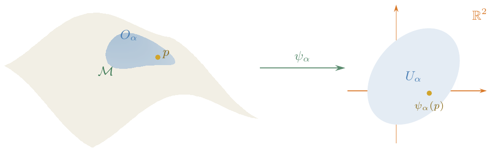
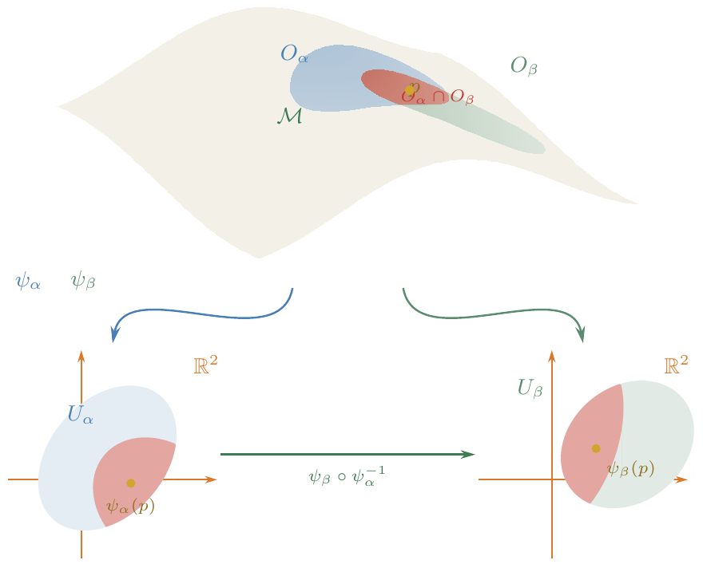
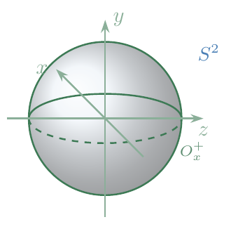
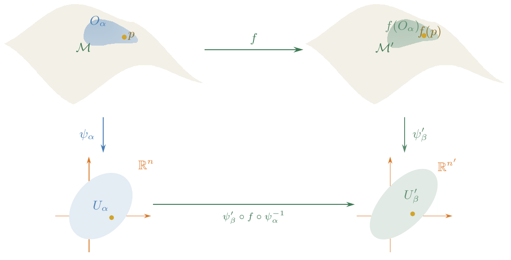
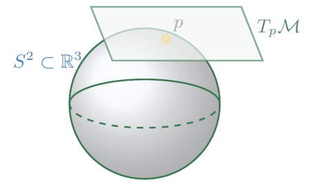
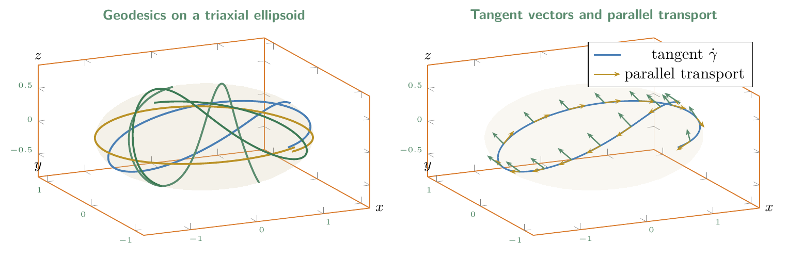

It is a core underlying assumption of both special and general relativity—indeed of much of physics—that spacetime is a continuum: to characterise an event we need four numbers (one temporal, three spatial). In special relativity this continuum is the familiar flat \(\mathbb{R}^{4}\), but in general relativity the geometry itself is dynamical—it changes in response to the distribution of matter, energy, and stress throughout the universe.
Because we now allow the geometry to be curved and dynamical, we need a mathematical apparatus to describe and quantify the situation precisely; without it we would be limited to qualitative remarks, whereas in physics we want to make sharp, falsifiable predictions. One approach would be to model curved continua as surfaces embedded in a higher-dimensional ambient space \(\mathbb{R}^{m}\). This works, but it raises an uncomfortable question: do these extra dimensions exist? We sidestep the issue entirely by studying curved continua intrinsically, without reference to any ambient space—and this leads us to the theory of manifolds.
In general relativity, spacetime is a manifold ℳ. Although we may picture ℳ as sitting inside some higher-dimensional ℝm, all physically meaningful statements should be intrinsic: they must not depend on the embedding. The intrinsic approach requires more formalism upfront, but it is ultimately more natural and more transferable to other areas of theoretical physics.
We work in \(n\) dimensions throughout. One might ask: why bother with arbitrary \(n\) when spacetime is four-dimensional? There are several good reasons. First, it costs almost no extra effort and yields considerable generality for free. Second, we often wish to restrict attention to dynamics on a lower-dimensional hypersurface (a particle constrained to the surface of a sphere, for instance). Third—and more speculatively—there are indications from quantum gravity (the holographic principle, for example) that the effective dimension of spacetime may itself be emergent. Finally, in a quantum theory of gravity one might need to superpose spacetimes of different dimensions, so it is wise not to hard-code \(n=4\).
\(\mathbb{R}^{n} = \{(x^1,\dots,x^n) \mid x^j \in \mathbb{R}\}\).
For \(\boldsymbol{x} = (x^1,\dots,x^n)\), the Euclidean norm is \[\lVert \boldsymbol{x}-\boldsymbol{y} \rVert = \Bigl(\sum_{j=1}^{n}(x^j - y^j)^2\Bigr)^{1/2}.\]
The open ball of radius \(r\) about \(\boldsymbol{y}\) is \[B_r(\boldsymbol{y}) = \{\boldsymbol{x}\in\mathbb{R}^{n} \mid \lVert \boldsymbol{x}-\boldsymbol{y} \rVert < r\}.\]
A subset \(U\subseteq\mathbb{R}^{n}\) is open if for every \(\boldsymbol{x}\in U\) there exists \(\varepsilon > 0\) such that \(B_\varepsilon(\boldsymbol{x})\subset U\).
\(C^k\) denotes the set of \(k\)-times continuously differentiable functions (from \(\mathbb{R}^{n}\) to \(\mathbb{R}\), or between open subsets thereof): all partial derivatives of order \(\le k\) exist and are continuous.
\(C^0 = {}\)continuous functions, \(C^\infty = {}\)smooth (infinitely differentiable) functions.
An n-dimensional, C∞, real manifold ℳ is a set together with a collection {Oα} of subsets satisfying:
ℳ is a topological space (Hausdorff and second-countable).1
The subsets {Oα} cover ℳ, i.e. ⋃αOα = ℳ. Equivalently: for every p ∈ ℳ there exists at least one α with p ∈ Oα.
For each α there is a homeomorphism ψα : Oα → Uα , Uα ⊂ ℝn (open) ,

One should think of each pair (Oα,ψα) as identifying a piece of the manifold with a piece of Euclidean space. A manifold is thus built up—sewn together—from patches of ℝn.
If any two sets Oα and Oβ overlap, i.e. Oα ∩ Oβ ≠ ⌀, then the transition map ψβ ∘ ψα−1 : ψα[Oα∩Oβ] → ψβ[Oα∩Oβ] (which is a map between open subsets of ℝn) is C∞. This condition governs the gluing: wherever two patches overlap, the two coordinate descriptions must be smoothly related.

−1 between open subsets of ℝ²." style="max-width:100%; height:auto;">The maps \(\psi_\alpha\) are called charts (in mathematics) or coordinate systems (in physics).
The definition as stated depends on the choice of cover \(\{O_\alpha\}\) and charts \(\{\psi_\alpha\}\). Adding a new chart \(\psi'\) compatible with the existing ones would formally give a “new” manifold, even though it carries no new information. To eliminate this ambiguity we require the atlas \(\{\psi_\alpha\}\) to be maximal: all coordinate systems compatible with conditions (2) and (3) are included.
Requiring maximality is a bookkeeping device. In practice one specifies a convenient atlas and declares that every compatible chart is implicitly included.
\(\mathbb{R}^{n}\) is the trivial example: it can be covered by a single chart \(O_1 = \mathbb{R}^{n}\), \(\psi_1 = \id\). As a manifold, \(\mathbb{R}^{n}\) has uncountably many compatible covers (any collection of open sets that covers \(\mathbb{R}^{n}\), together with the identity or other smooth maps, will do).
Minkowski spacetime is \(\mathbb{R}^1\times\mathbb{R}^3 \cong \mathbb{R}^{1,3} \cong \mathbb{R}^{4}\) as a manifold. (The Lorentzian structure—the metric signature—comes later.)
The \(n\)-sphere is \[\label{eq:Sn-def} S^n = \bigl\{(x^1,\dots,x^{n+1})\in\mathbb{R}^{n+1} \;\big|\; \textstyle\sum_{j=1}^{n+1}(x^j)^2 = 1\bigr\}.\] \(S^n\) cannot be covered by a single chart (it is compact, while any chart image is an open subset of \(\mathbb{R}^{n}\)). Define the \(2(n{+}1)\) open sets \[\label{eq:Sn-open-sets} O_k^+ = \{(x^1,\dots,x^{n+1})\in S^n \mid x^k > 0\}\,, \qquad O_k^- = \{(x^1,\dots,x^{n+1})\in S^n \mid x^k < 0\}\,,\] for \(k = 1,\dots,n{+}1\). These cover \(S^n\). The corresponding charts are \[\label{eq:Sn-charts} \psi_k^\pm : O_k^\pm \to \mathbb{R}^{n}\,, \qquad \psi_k^\pm(x^1,\dots,x^{n+1}) = (x^1,\dots,x^{k-1},x^{k+1},\dots,x^{n+1})\,,\] i.e. one simply drops the \(k\)-th coordinate (whose sign is determined by the choice of \(O_k^\pm\)).
Special case: \(S^2\). Consider the charts \(\psi_x^+\) (drop \(x\), restricted to \(x>0\)) and \(\psi_y^-\) (drop \(y\), restricted to \(y<0\)). On the overlap \(\{(y,z)\in\mathbb{R}^{2} \mid y<0,\; y^2+z^2<1\}\), the transition function is \[(\psi_y^-\circ(\psi_x^+)^{-1})(y,z) = \bigl(\sqrt{1-y^2-z^2},\; z\bigr).\]

+ = {(x,y,z)∈S² : x > 0}, one of the six coordinate-halving charts of S²." style="max-width:100%; height:auto;">Find the remaining transition functions for the atlas {ψk±} of Sn and show that they are all C∞.
For many basic solutions of Einstein’s field equations the underlying manifold is simply ℝ4—only the geometry (the metric) varies. So one might wonder whether the full manifold machinery is really necessary. The answer is yes: as soon as one considers cosmological spacetimes (which may be compact, like S3 × ℝ) or black hole spacetimes (which have non-trivial causal structure and topology), more general manifolds become unavoidable. In quantum gravity one may even wish to sum over manifolds of different topologies, making this generality essential.
Suppose \(\mathcal{M}\) and \(\mathcal{M}'\) are manifolds of dimension \(n\) and \(n'\), respectively. We can form the product manifold \(\mathcal{M}\times\mathcal{M}'\).
Let \(\psi_\alpha: O_\alpha\to U_\alpha\) and \(\psi'_\beta: O'_\beta\to U'_\beta\) be charts for \(\mathcal{M}\) and \(\mathcal{M}'\). Define charts for \(\mathcal{M}\times\mathcal{M}'\) via \[\psi_{\alpha\beta}: O_\alpha\times O'_\beta \;\to\; U_\alpha\times U'_\beta \;\subset\; \mathbb{R}^{n+n'}\,,\] with \[\label{eq:product-chart} \psi_{\alpha\beta}(p,p') = \bigl(\psi_\alpha(p),\;\psi'_\beta(p')\bigr) \;\in\; \mathbb{R}^{n+n'}\,.\]
Verify that ℳ × ℳ′ with the charts {ψαβ} satisfies the manifold axioms.
$\mathbb{R}^{n} = \underbrace{\mathbb{R}\times\mathbb{R}\times\cdots\times\mathbb{R}}_{n}$.
The torus: T2 = S1 × S1.
With just ℝ and Sn and their products, one can construct many of the manifolds relevant to general relativity.
Let \(\mathcal{M}\) and \(\mathcal{M}'\) be manifolds with charts \(\{\psi_\alpha\}\) and \(\{\psi'_\beta\}\).
A map f : ℳ → ℳ′ is said to be C∞ (smooth) if for all α, β the composite ψ′β ∘ f ∘ ψα−1 : Uα → U′β is C∞ (as a map between open subsets of Euclidean spaces).

−1 must be smooth as a map between open subsets of Euclidean space." style="max-width:100%; height:auto;">A map f : ℳ → ℳ′ is a diffeomorphism if it is C∞, one-to-one, onto, and its inverse f−1 is also C∞. If such a map exists, ℳ and ℳ′ are said to be diffeomorphic: they have identical manifold structure.
Euclidean space \(\mathbb{R}^{n}\) (and Minkowski space) carries a natural global vector space structure: \(V = \mathbb{R}^{n}\) is simultaneously a manifold and a vector space.
For a general manifold this is no longer true—there is no natural additive structure. This is an instance of a general phenomenon: when one generalises a definition so that it applies to more examples, some of the structure enjoyed by the original example is inevitably lost. Euclidean space is simultaneously a manifold, a vector space, and a group; a generic manifold is none of the latter two.
The 2-sphere S2 is a manifold, but it is not a vector space: there is no natural way to “add” two points on S2 and obtain another point on S2.
We want to preserve as much of this vector-space structure as possible, because without vectors we cannot write down equations of motion for test particles. The key observation is that even though \(S^2\) is not globally a vector space, at each point \(p\) there is still a natural local vector space—the tangent plane—and this idea generalises to arbitrary manifolds.
It is, however, still possible to associate a vector space to each point of a manifold. For a manifold \(\mathcal{M}\) embedded in \(\mathbb{R}^{m}\) (such as \(S^2\subset\mathbb{R}^{3}\)), one can visualise the tangent plane at a point \(p\):

But we want an intrinsic definition, independent of any embedding.
The picture above relies on the embedding S2 ⊂ ℝ3, which we have declared off-limits. The solution is a pleasant roundabout: one first observes that there is a one-to-one correspondence between tangent vectors and directional derivatives of smooth functions, and then notes that directional derivatives can be defined using only the manifold structure—no embedding required. We therefore define tangent vectors as directional derivatives. This is developed in the next lecture.

We collect the precise versions of the definitions introduced above for reference.
A locally Euclidean space of dimension d is a Hausdorff topological space ℳ such that every point has a neighbourhood homeomorphic to an open subset of ℝd.
A differentiable structure ℱ of class Ck (1 ≤ k ≤ ∞) on a locally Euclidean space ℳ is a collection of coordinate systems {(Oα,ψα) ∣ α ∈ A} such that:
⋃α ∈ AOα = ℳ.
ψα ∘ ψβ−1 is Ck for all α, β ∈ A.
The collection ℱ is maximal with respect to (b).
A \(d\)-dimensional differentiable manifold of class \(C^k\) is a pair \((\mathcal{M},\mathcal{F})\) consisting of a second-countable, locally Euclidean space \(\mathcal{M}\) together with a differentiable structure \(\mathcal{F}\) of class \(C^k\). (The \(C^k\) condition can be generalised to \(C^\infty\), complex analytic, etc.)